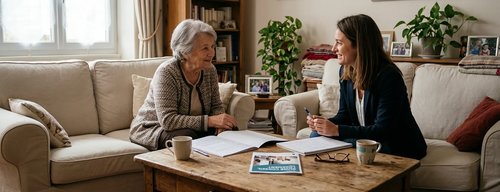

Orientation rapide : par où commencer ?
Explorez MaPrimeAdapt’ — 50 à 70 % des dépenses éligibles selon vos ressources.
Explorez l’APA auprès de votre conseil départemental — un plan d’aide global, travaux compris.
Explorez la PCH auprès de la MDPH — aides humaines, techniques et aménagement du logement.
Explorez les aides « bien vieillir » de votre caisse de retraite.
Plusieurs dispositifs peuvent parfois participer au financement d’un même projet, mais leur articulation doit être vérifiée pour éviter de financer deux fois la même dépense.
Le comparatif des principaux dispositifs
S’y ajoutent selon les territoires : aides départementales et communales, fonds départemental de compensation (handicap), aides locales au logement — voir plus bas.
L’APA à domicile : le plan d’aide des GIR 1 à 4
L’allocation personnalisée d’autonomie s’adresse aux personnes de 60 ans ou plus, résidant en France de façon stable et régulière, dont la perte d’autonomie est évaluée en GIR 1 à 4. Point essentiel : l’APA n’est pas refusée en raison des revenus — ceux-ci déterminent seulement la participation qui reste à votre charge.
Ce que le plan peut couvrir : aide à domicile, téléassistance, portage de repas, matériel et aides techniques, travaux d’aménagement du logement, hébergement temporaire, transport. La démarche : demande au département → évaluation à domicile → calcul du GIR → plan d’aide proposé → décision. Bon à savoir : l’APA n’est pas récupérable sur la succession.
La PCH : la compensation du handicap
La prestation de compensation du handicap s’adresse aux personnes présentant une difficulté absolue pour une activité importante (marcher, se laver…) ou au moins deux difficultés graves. La demande se fait auprès de la MDPH (formulaire, projet de vie, certificat médical) ; la CDAPH décide, le département verse.
- ·Âge — demande généralement avant 60 ans, mais accès possible au-delà si les critères étaient remplis avant cet âge (l’ancienne limite de 75 ans a été supprimée dans ce cas), ou en poursuivant une activité professionnelle. Maintien possible après 60 ans.
- ·Types d’aide — aide humaine, aides techniques, aménagement du logement, aménagement du véhicule, surcoûts de transport, charges spécifiques, aide animalière.
- ·Aménagement du logement — plafond actuel de 10 000 € sur dix ans : un budget qui couvre une salle de bain adaptée ou une bonne partie d’un monte-escalier, dans la limite des tarifs prévus.
- ·Ressources 2026 — prise en charge à 100 % des tarifs et plafonds PCH si les ressources annuelles prises en compte sont ≤ 31 162,62 €, à 80 % au-delà. Attention : ces taux s’appliquent aux tarifs du dispositif, pas automatiquement à toute facture réelle.
APA ou PCH : non cumulables, un droit d’option
L’APA et la PCH ne se cumulent pas pour une même personne au même moment. Si vous remplissez les conditions des deux, vous disposez d’un droit d’option — un choix qui n’est pas définitif : le passage de l’un à l’autre intervient généralement au renouvellement du droit. Quelques repères pour préparer la discussion avec la MDPH ou le département :
Le choix vous appartient — ces repères servent à poser les bonnes questions, pas à décider à votre place.
Caisses de retraite, aides locales, fonds de compensation
- ·Caisses de retraite (Assurance retraite, MSA, complémentaires) — aides « bien vieillir chez soi » pour les retraités autonomes, notamment GIR 5 ou 6, non couverts par l’APA : conseils, aides techniques, téléassistance, aide à domicile, adaptation du logement. Règles et montants propres à chaque caisse — le formulaire de demande d’aide à l’autonomie déclenche une évaluation des besoins.
- ·Aides départementales et communales — département, commune, CCAS, intercommunalité : certains territoires complètent les dispositifs nationaux. L’outil des aides locales de l’ANIL et votre ADIL permettent de vérifier ce qui existe chez vous.
- ·Fonds départemental de compensation — peut réduire le reste à charge des personnes bénéficiaires de la PCH pour des projets coûteux.
- ·Prévoyance et mutuelles — certaines proposent des prestations d’adaptation ou d’assistance : un appel à votre organisme complète utilement le tour d’horizon.
Fiscalité : où en est-on en 2026 ?
Attention aux informations datées — le crédit d’impôt pour les équipements d’adaptation du logement concernait les dépenses payées jusqu’au 31 décembre 2025 : un projet payé en 2026 n’ouvre pas automatiquement le même droit. Vérifiez la fiscalité en vigueur sur impots.gouv.fr avant d’en tenir compte dans votre budget. Les taux de TVA applicables se vérifient séparément selon la nature des travaux et le logement.
Six situations, six parcours
Situations fictives à titre pédagogique — aucun montant n’est garanti ; chaque dossier suit sa propre instruction.
Piste principale : MaPrimeAdapt’ (70 ans+, pas de GIR requis). Préparer : avis d’imposition, description du projet. Contacter France Rénov’.
APA au département (plan global aide + aménagements) et MaPrimeAdapt’ envisageable (60–69 ans avec GIR) — articulation à valider dans le dossier, sans double financement.
Volet logement PCH (10 000 €/10 ans) et MaPrimeAdapt’ (être bénéficiaire de la PCH ouvre la condition personnelle) — l’AMO aide à articuler les deux. Devis après visite indispensable.
Hors APA (GIR 5) : caisse de retraite (formulaire d’aide à l’autonomie) et MaPrimeAdapt’ selon les ressources. Aides locales à vérifier via l’ADIL.
Vérifier la catégorie de ressources (RFR additionnés), puis MaPrimeAdapt’ ; chiffrer le projet avec notre guide des prix et un devis après visite.
Si GIR 1–4 : l’APA peut couvrir les deux besoins dans un plan unique. Sinon : MaPrimeAdapt’ pour le monte-escalier + caisse de retraite pour les services.
Vous avez identifié les aides à explorer ?
Passez maintenant à la préparation du projet : monte-escalier, douche adaptée ou salle de bain complète.
Questions fréquentes
Quelle est la différence entre l’APA et la PCH ?
L’APA compense la perte d’autonomie liée à l’âge (60 ans+, GIR 1–4) via un plan d’aide départemental ; la PCH compense un handicap (critères MDPH) avec des volets chiffrés — aides humaines, techniques, logement. Les publics, organismes et logiques de calcul diffèrent.
Peut-on cumuler l’APA et la PCH ?
Non, pas pour une même personne au même moment. En cas de double éligibilité, un droit d’option s’exerce — révisable, généralement au renouvellement du droit.
L’APA peut-elle financer des travaux dans le logement ?
Oui : des aménagements du logement peuvent être intégrés au plan d’aide décidé par le département, dans la limite du plafond mensuel de votre GIR et moins votre participation.
Quel est le plafond PCH pour l’aménagement du logement ?
10 000 € sur dix ans actuellement, pris en charge à 100 % ou 80 % des tarifs prévus selon vos ressources (seuil 2026 : 31 162,62 € de ressources annuelles prises en compte).
L’APA dépend-elle des revenus ?
Les revenus ne font pas perdre le droit à l’APA : ils déterminent votre participation. En 2026, aucune participation jusqu’à 933,89 € de ressources mensuelles, progressive ensuite, 90 % du plan au-delà de 3 439,31 €.
Quels sont les plafonds APA 2026 ?
Plafonds mensuels du plan d’aide : 2 080,33 € (GIR 1), 1 682,30 € (GIR 2), 1 215,99 € (GIR 3), 811,52 € (GIR 4). Le montant réellement attribué dépend du plan établi et de votre participation.
Que demander en GIR 5 ou 6 ?
L’APA n’est pas ouverte : adressez-vous à votre caisse de retraite (aides « bien vieillir », formulaire d’aide à l’autonomie) et vérifiez MaPrimeAdapt’ selon vos ressources, plus les aides locales.
MaPrimeAdapt’ peut-elle être associée à la PCH ou à l’APA ?
Une articulation est possible sur un même projet (être bénéficiaire de la PCH ouvre d’ailleurs la condition personnelle de MaPrimeAdapt’), mais une même dépense ne peut pas être financée deux fois : l’ordre des demandes et les dépenses retenues se valident dans le dossier, avec l’AMO.
Quelle aide demander pour un monte-escalier ?
Selon votre situation : MaPrimeAdapt’ (ressources modestes), APA (GIR 1–4, au plan d’aide), PCH (handicap) ou caisse de retraite. Le détail dispositif par dispositif : Quelles aides pour un monte-escalier ?
L’APA est-elle récupérable sur la succession ?
Non. C’est une différence notable avec certaines aides sociales départementales plus anciennes — un frein psychologique fréquent qui n’a pas lieu d’être pour l’APA.
À qui s’adresser en premier ?
Selon la porte d’entrée : France Rénov’ pour un projet de travaux (MaPrimeAdapt’), le conseil départemental pour une perte d’autonomie (APA), la MDPH pour un handicap (PCH), votre caisse de retraite si vous êtes autonome. Le tableau d’orientation en haut de page résume ces choix.